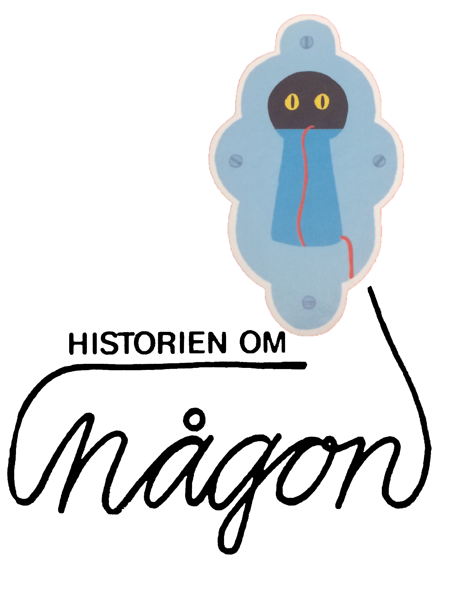

Åke Löfgren
Egon Möller-Nielsen

Det här var underligt! Det är en våt fläck på
golvet i tamburen! Någon måste ha varit här!
Det är någon som har
smugit sig in genom porten och in genom dörrspringan och lämnat en våt
fläck på golvet. Vem kan det vara? Var kan han vara nu? Vi ska se efter
om han gömmer sig i nästa rum!
Kan du tänka dig, det är någon som har varit och stökat till det i det här rummet också. Han har vält om kull mormors runda stickbord. Mormors stickning ligger på golvet. Men garnnystanet är borta. Var kan det vara? Det ligger en röd ulltråd på golvet. Vi ska ta och följa den, så kanske vi kan finna vår gäst.
Vi följer ulltråden in i köket. Men vem kan det
vara som har ätit upp de två fiskarna, som vi skulle ha till middag?
Kanske han har smitit in i skåpet! Kanske han sitter och äter upp all
annan mat för oss nu!

Vi öppnar skåpdörren och ser efter. Någon har varit där inne också. Tillbringaren ligger omkullvält och all mjölken är urdrucken. Men ulltråden går vidare ut i hallen och…

…uppför trappan till över våningen. Mitt i trappan går tråden runt en av pinnarna i trappräcket. Det var väl konstigt!

Oh, en sån olycka! Här har också någon varit framme! Den ena guldfisken har kommit ur akvariet och hamnat på bordet. Där ligger han nu och sprattlar. Vi skyndar oss att stoppa ner honom i vattnet igen. Vem kan ha varit här?


Vi följer den röda tråden in under sängen i
sängkammaren, och när vi kommer ut på andra sidan
– vad tror du vi får se?
Någon har ställt till en väldig röra på
golvet – han har dragit ner en blomkruka så att den har gått i tusen
bitar. –Nej, nu måste vi snart ha fatt på honom. Upp för en trappa till
– raska på!

Uppe på vinden finns mycket gammalt bråte. Där går det bra att gömma sig. Vi ska ta och leta i hörnet bakom väskorna. Tror du det finns någon där?

Aj aj aj…hör ligger en råttsvans! Vad kan ha hänt? Men ulltråden går in i det fina skåpet. Kanske den vi söker efter finns där inne?

Ulltråden går in i skåpet. Om vi skulle försöka kika in genom nyckelhålet! Försiktigt, försiktigt sätter vi ögat intill – oj det är någon som kikar tillbaka därinne! Ska vi våga oss på att öppna skåpdörren?

Sakta, sakta, sakta, öppnar vi skåpdörren. Därinne står en gammal fin blå vas,. Den är sprucken. Därför står den i ett skåp på vinden. Ulltråden går ner i den gamla fina vasen. Ska vi våga ta ut den och se efter vad som finns i den?
Den gamla fina, blå vasen trillar omkull! Det faller ut ett rött grannystan!
Det är mormors nystan, som vi letat så länge efter. Finns det något mer i vasen, tror du?
I vasen fanns också den här lilla kissemissen.
Det var han som gjorde en våt fläck på golvet. Det var han som stjälpte mormors borde och åt upp de två fiskarna och drack ur mjölken och gick upp för trappan och fiskade upp en guldfisk och välte ner en blomkruka och gick upp på vinden och åt upp en råtta och kröp in i skåpet och slank ner i vasen, där vi hittade honom. Kissemissen heter Nisse. Men vill du veta något mera, så får du fråga honom själv.